This thesis iteration presents a self-contained study of consumer
credit default prediction on the LendingClub dataset (2007–2018). We
evaluate how feature subset design and model family—especially neural
networks—affect precision–recall performance when models are validated
with a time-aware protocol. Three dataset scales (10k, 100k, full) and
four feature regimes (compact to enriched with pricing/grade variables)
are compared. We combine rigorous data handling (leakage controls,
chronological splits, validation-carved thresholds) with an automated
modeling backend to produce reproducible, explainable results. The
enriched feature set including int_rate,
grade/sub_grade, and installment improves
AUCPR on medium and large datasets. Tree ensembles lead overall on
larger tabular datasets (Grinsztajn et al.,
2022; Shwartz-Ziv & Armon, 2022). We
analyze why this pattern emerges and provide a practical blueprint to
strengthen neural networks on this task (embeddings, monotonic cues,
regularization, calibration, temporal CV). The deliverables include
per-dataset reports with curves and variable-importance analyses and a
consolidated cross-dataset comparison. The study closes with a roadmap
for neural-first improvements and robustness under temporal drift.
Peer-to-peer lending platforms such as LendingClub have catalyzed a rich literature on credit risk modeling, feature selection, and evaluation under class imbalance, with influential baselines built on this specific dataset (Croux et al., 2020; Emekter et al., 2015a; Jagtiani & Lemieux, 2019a; Serrano-Cinca et al., 2015a). We address a concrete practical question: Which feature subsets and model families—including neural networks—yield the best performance in a realistic, time-aware evaluation? We adopt a split policy that mirrors deployment: train on older loans, test on newer ones, and select the decision threshold on a held-out validation slice carved from the training period.
1.1 Credit Risk and Why It Matters
Credit risk is central to financial stability, consumer welfare, and the efficient allocation of capital. For lenders and platforms, accurate assessment of default probability underpins pricing (interest rates), provisioning, and regulatory capital; for borrowers, it impacts access and affordability. In consumer credit, small improvements in discrimination and calibration translate into large changes in expected loss, approval decisions, and portfolio utility. P2P platforms such as LendingClub intensified research interest by publishing rich origination‑time datasets with final outcomes, enabling reproducible empirical work on determinants of default, model performance, and profit‑aligned scoring (Croux et al., 2020; Emekter et al., 2015a; Jagtiani & Lemieux, 2019a; Serrano-Cinca et al., 2015a; Serrano-Cinca & Gutiérrez-Nieto, 2016).
Three practical constraints shape this thesis: (i) class imbalance and asymmetric costs make precision–recall a better primary objective than accuracy; (ii) concept drift across vintages (macroeconomic cycles, policy changes, borrower mix) mandates time‑based evaluation and validation‑chosen thresholds; and (iii) leakage control is non‑negotiable—post‑event fields (payments, recoveries, last_* dates, hardship/settlement) must be excluded so the model reflects information available at origination only. Against this backdrop, we compare feature regimes (portable vs provider‑aware), evaluate neural networks alongside strong tree ensembles, and emphasize calibrated, thresholded decisions consistent with operational use.
1.2 Why Neural Networks for Credit Risk
Neural networks (NNs) are universal function approximators trained end-to-end, with the flexibility to incorporate learned embeddings for categorical features (e.g., grades), non-linear transformations for numeric features, and additional modalities (e.g., free-text loan descriptions). For tabular credit data, NNs must be configured thoughtfully: categorical embeddings (instead of brittle one-hot dummies), monotonic cues on known risk drivers (e.g., higher interest rate correlates with higher risk), strong regularization (BatchNorm, dropout, weight decay), and calibrated outputs. With these ingredients, NNs can be competitive with, and sometimes surpass, boosted trees—especially as dataset size and feature richness grow (H. Li et al., 2022; Wang & Wang, 2024).
Motivation. Credit platforms continuously evolve underwriting criteria, borrower mix, and pricing, creating concept drift across vintages. Benchmarks that rely on random splits overstate performance by mixing future patterns into training. We therefore enforce chronological splits, careful leakage controls, and explicit thresholding on validation that is held out from the training period. This lets us attribute improvements to modeling and features—not evaluation artifacts—and assess stability over time.
Contributions. 1) A self-contained, reproducible evaluation of multiple feature regimes across dataset scales with explainable figures and metrics. 2) A thorough focus on neural networks (NNs) for tabular credit risk: architecture considerations, categorical encoding/embeddings, class imbalance, calibration, and temporal robustness—framed against strong tree-ensemble baselines. 3) Clear, deployable takeaways: when to use enriched features; how to select thresholds; and how to bring NNs closer to (or beyond) gradient boosting on this dataset.
Default modeling on LendingClub (LC). Early empirical baselines analyze determinants of default and returns in P2P lending and on LC specifically, establishing widely reused variables and evaluation setups (Emekter et al., 2015a; Serrano-Cinca et al., 2015a). Tree‑ensemble methods (RF/GBM/XGB) and SVMs appear as strong tabular baselines for LC default classification (Guevara-Díaz, 2020; Malekipirbazari & Aksakalli, 2015; Núñez Mora et al., 2023). LC platform grades and alternative data have been studied as predictors and policy signals (Croux et al., 2020; Jagtiani & Lemieux, 2019a).
Profit/pricing‑oriented scoring. Beyond PD, profit‑aligned objectives and threshold selection strategies are proposed for P2P lending (Serrano-Cinca & Gutiérrez-Nieto, 2016), complementing default‑centric metrics and informing threshold choice on validation.
Survival analysis and censoring. Classic and modern works frame default as time‑to‑event, motivating explicit handling of right‑censoring and temporal dynamics (Banasik et al., 1999; Bellotti & Crook, 2013; Sanchez-Barrios et al., 2016). Reject‑inference in survival contexts addresses sample‑selection bias when combining accepted/rejected cohorts (Banasik & Crook, 2010). These strands support our time‑based split and caution around recent vintages.
Selection bias and investor‑oriented decisions. Instance‑based decision support for P2P platforms highlights feature design and practical evaluation schemes applicable to LC (Y. Guo et al., 2016).
Interpretability and explainability. Model‑agnostic tools such as LIME (and related approaches) are often used to explain tabular credit models to stakeholders (Ribeiro et al., 2016). These complement tree varimp and permutation importance used in our reports.
Feature selection. Regularized linear models (e.g., LASSO) and stability‑oriented selection remain standard for tabular credit risk and underpin compact/portable regimes in our experiments (Tibshirani, 1996).
Synthesis. The non‑neural literature establishes: (i) strong tree‑ensemble baselines on LC; (ii) the importance of pricing/grade variables; (iii) profit‑aligned thresholding; and (iv) time‑aware evaluation to respect censoring and drift. Our setup adopts these invariants and uses them as a yardstick for neural models.
Neural credit risk spans classical MLPs for tabular data and modern deep architectures (CNNs, RNNs/LSTMs, attention/Transformers), increasingly fusing numeric features with text and alternative modalities. We organize this part by architecture family and modeling theme, roughly following historical progression.
int_rate, dti).Takeaway. Literature supports a neural‑first program that (a)
represents categoricals with embeddings, (b) encodes domain monotonicity
(e.g., int_rate, dti), (c) calibrates
probabilities for threshold‑based decisions, (d) validates temporally,
and (e) leverages text via BERT/LLM encoders when available.
2.1 Dataset
We use the LendingClub consumer installment loans dataset spanning 2007–2018 vintages. Each record represents a funded loan at origination (accepted-loans cohort). Labels are derived from final outcomes: Fully Paid vs Charged Off (default). We adhere to origination-only features to avoid post-event leakage (e.g., payments, recoveries, last_* dates, hardship/settlement). Prior studies establish baseline determinants and modeling approaches on this dataset (Croux et al., 2020; Emekter et al., 2015a; Jagtiani & Lemieux, 2019a; Núñez Mora et al., 2023; Serrano-Cinca et al., 2015a).
Key columns used and their meanings. - loan_amnt
(numeric): Amount borrowed. - term (categorical: 36 or 60
months): Loan term. - int_rate (numeric): Interest rate set
at origination; a strong pricing proxy. - grade /
sub_grade (categorical): Platform credit grades; ordinal
and highly informative. - installment (numeric): Monthly
payment amount; largely determined by loan_amnt,
term, and int_rate. - annual_inc
(numeric): Stated annual income. - dti (numeric):
Debt-to-income ratio—a capacity/risk indicator. -
fico_range_low / fico_range_high (numeric):
FICO range at origination; we also use fico_avg when
engineered. - revol_bal / revol_util
(numeric): Revolving balance and utilization. - emp_length
(categorical): Employment length (binned); a stability proxy. -
home_ownership, verification_status,
addr_state, purpose (categorical): Context and
underwriting factors. - mort_acc,
total_rev_hi_lim, num_rev_tl_bal_gt_0, etc.
(numeric): Depth and limits; credit capacity.
Glossary of important columns (extended descriptions). 1)
loan_amnt: The principal at origination; larger balances
increase exposure at default but are not directly causal for probability
of default (PD). Interacts with term and
int_rate to determine installment. 2)
term: Contract duration (36 or 60 months). Longer term
generally implies higher PD due to longer exposure and looser
affordability constraints. 3) int_rate: The APR at
origination; encapsulates lender pricing and perceived risk. Strong
monotonic relationship with default risk in-sample. 4)
grade / sub_grade: Discrete buckets
summarizing multi-factor underwriting; ordinal but treated
categorically. Proxy for risk segmentation. 5) installment:
Monthly payment amount implied by loan_amnt,
term, and int_rate. Adds limited incremental
information beyond its determinants. 6) annual_inc:
Borrower-stated annual income; used to normalize obligations and inform
affordability. 7) dti: Debt-to-income ratio: (total monthly
debt payments / monthly income). Higher DTI indicates constrained
capacity and higher PD. 8) fico_range_low /
fico_range_high (and fico_avg): Credit score
range. Higher FICO implies lower PD; fico_spread can encode
uncertainty. 9) revol_bal / revol_util:
Revolving balances and utilization of available credit lines. Elevated
utilization signals stress and higher PD. 10) emp_length:
Employment tenure; longer tenure correlates with stability. 11)
home_ownership: Homeownership category; can proxy asset
backing and financial maturity. 12) verification_status:
Income/document verification; verified applications are less prone to
misreporting, often correlating with lower PD. 13)
addr_state: Coarse geographic factor capturing
macroeconomic and regulatory heterogeneity. 14) purpose:
Declared loan purpose; correlates with risk (e.g., debt consolidation vs
discretionary spending). 15) Credit depth/limits (e.g.,
mort_acc, total_rev_hi_lim,
num_rev_tl_bal_gt_0): Indicators of history with credit,
available headroom, and active trade lines.
2.2 Target and Positive Class
Binary classification: predict whether a loan will charge off
(default) versus fully pay. We adopt the convention
pos_label = 0 for Charged Off. All metrics, curves, and
thresholding respect this convention to avoid label inversion
errors.
2.3 Chronological Split and Validation
We split by origination date (issue_d): earlier loans
form training, later loans form test. Validation is carved from the
training period only. This enforces causal ordering and avoids
right-censoring leakage in recent vintages; standard random CV can
mislead under temporal dependence (Bergmeir et al., 2018). We select a
single decision threshold on validation using the Youden J statistic
(maximizes TPR − FPR) (Youden, 1950), then apply that fixed
threshold to the test set for fair reporting.
2.4 Metrics
In imbalanced credit settings, downstream utility depends on a fixed operating point (threshold). We choose the threshold on validation (carved from train) to avoid optimistic bias and apply it unchanged to test. We use Youden J (maximizes TPR − FPR) as a robust, distribution‑agnostic default (Youden, 1950); alternative strategies include F1 (balance precision/recall) or profit/expected‑value optimization when cost parameters are known (see Verbraken et al., 2014).
| Metric | Value |
|---|---|
| Threshold (Youden J, validation) | 0.1765 |
| True Positives (tp) | 36,227 |
| True Negatives (tn) | 129,969 |
| False Positives (fp) | 68,284 |
| False Negatives (fn) | 19,876 |
| Precision | 0.347 |
| Recall (TPR) | 0.646 |
| False Positive Rate (FPR) | 0.344 |
Why report this table. It anchors PR/ROC figures with the concrete operating point used for policy decisions. If utility/cost weights are available, the same table feeds expected‑value analysis to pick profit‑optimal thresholds on validation and lock them for test.
Leakage (what it is). Any feature that contains information not available at origination time (or that is causally downstream of the outcome) causes target leakage. Examples in LendingClub data include payments/recoveries, last payment dates, hardship/settlement flags, and collection‑stage balances. Including them produces inflated apparent performance (see Figure).
Our leakage policy. We drop all post‑event fields end‑to‑end and restrict modeling to origination‑time variables (see EDA figures). Where ambiguity remains, we err on the safe side and omit columns.
Fairness and sensitive proxies. Some fields act as
demographic/geographic proxies (e.g., ZIP Code). Even when predictive,
they can create disparate impact and reduce portability. In this
iteration, we omit such fields by default and focus on
underwriting‑relevant signals (capacity, credit history, pricing). We
include coarse geography (addr_state) but avoid granular
ZIP‑like signals.
High cardinality and noise. Free‑text or ultra‑granular categoricals
(e.g., emp_title) explode the one‑hot space, add noise, and
increase variance. Unless we use robust encodings (embeddings, target
encoding) and strong regularization, we prefer omitted or coarsened
versions (e.g., emp_length).
Practical examples in this thesis. - Dropped for leakage/sensitivity:
payments/recoveries/last_* dates, hardship/settlement, collection fees;
granular location (ZIP) excluded for fairness/portability. -
Dropped/coarsened for cardinality/noise: emp_title (free
text) omitted; emp_length (binned categorical) retained;
purpose used with monitoring; addr_state
retained; grade/sub_grade included only in provider‑aware
regimes.
We provide an early, self-contained view of the dataset to ground modeling decisions. Each figure is chosen to answer a specific question about class balance, leakage risks, signal strength, or temporal stability; each is referenced in the text where we use the insight.
| Metric | Value |
|---|---|
| Total raw loans | 2,104,542 |
| Final statuses kept | 1,271,779 (Fully Paid 1,020,444; Charged Off 251,335) |
| Non‑final dropped | 832,763 (e.g., Current 799,583; Late/Grace 30,373) |
| Positive class (Charged Off) | 19.76% overall |
| Category | Count | Notes |
|---|---|---|
| Numeric features | 51 | includes engineered ratios (e.g., fico_avg,
fico_spread, income_to_loan_ratio) |
| Categorical features | 21 | grade/sub_grade, term, purpose, home_ownership, verification_status, addr_state, etc. |
| Parse‑as‑date | 2 | issue_d (split), earliest_cr_line (credit
history) |
Class balance over time (why shown). Default base rates shift materially across vintages; Figure makes explicit the trend we must respect with time‑based validation and fixed thresholds selected on validation.
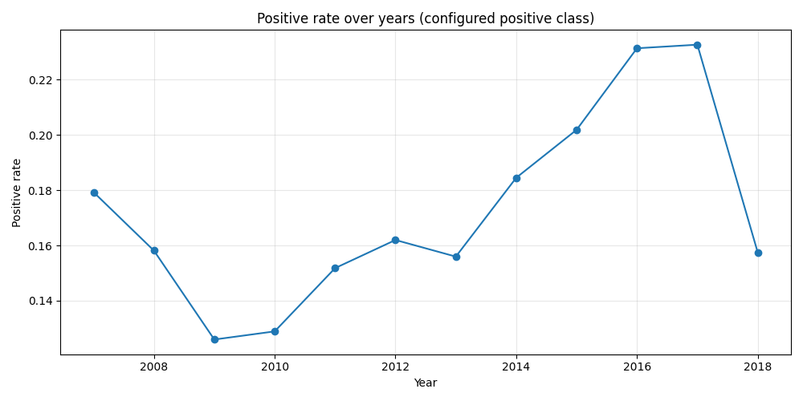
Missingness and leakage (why shown). Figure surfaces high‑missing, post‑event operational fields that must be excluded to avoid leakage.
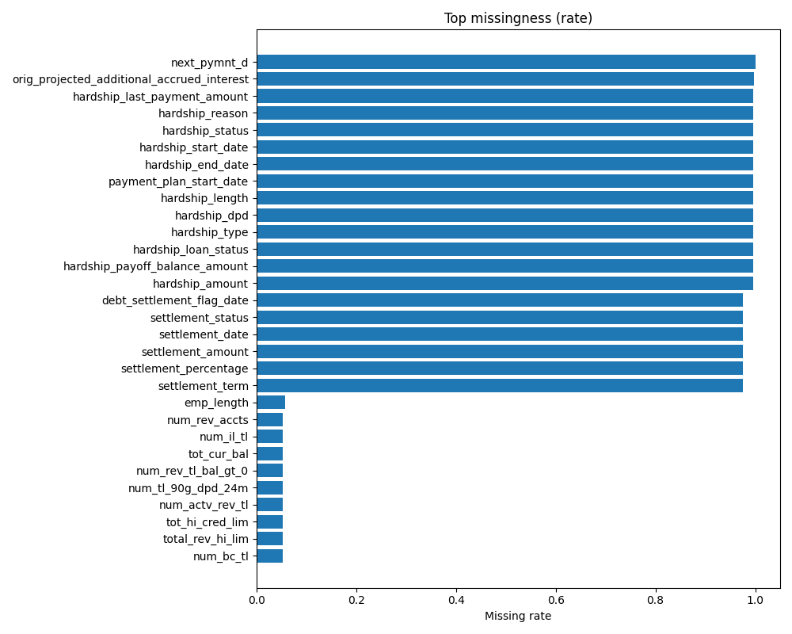
Distributions (why shown). Histograms contextualize ranges, outliers, and monotonic expectations—inputs to winsorization and monotone priors for NNs.
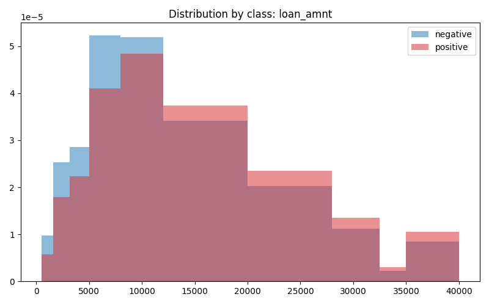
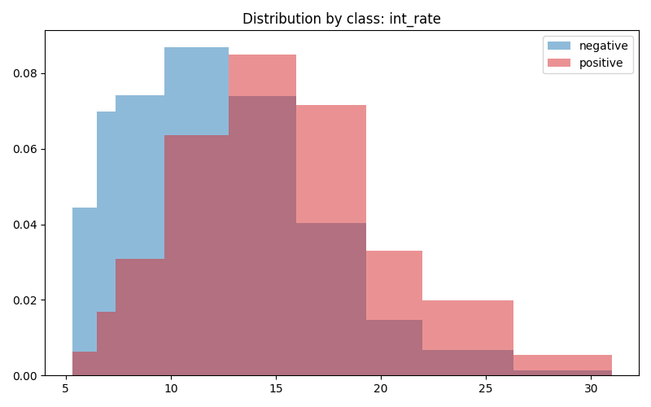
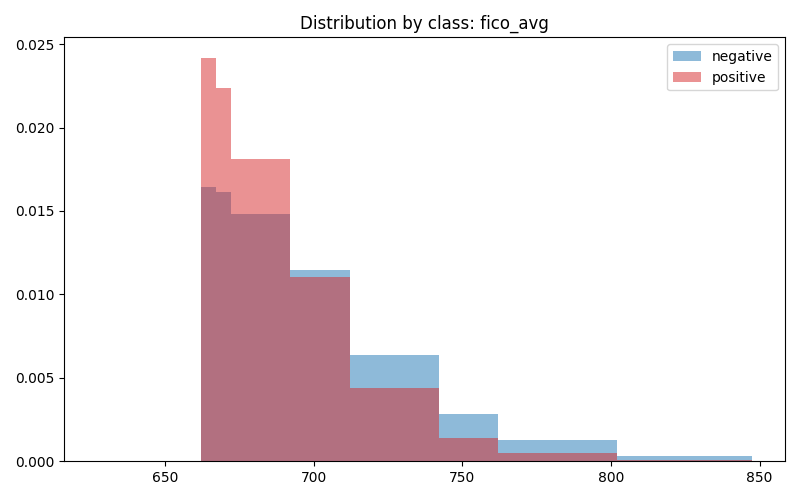
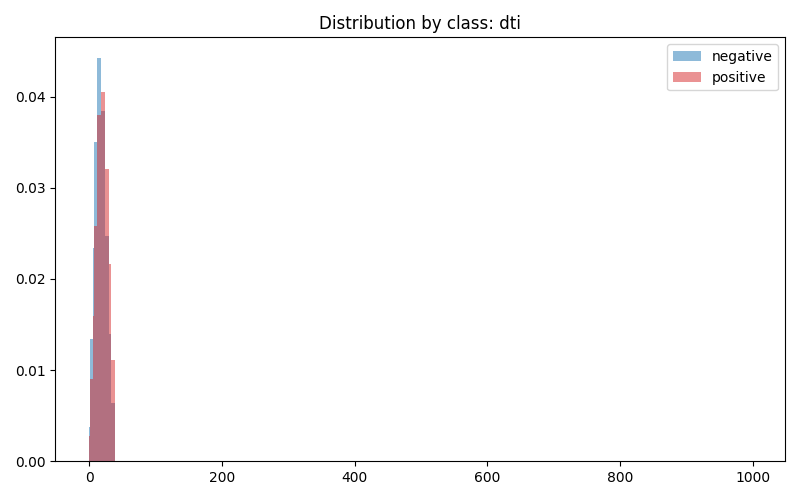
Categoricals (why shown). Bar plots reveal ordinal monotonicity (grade/sub_grade), policy signals (term), and context (purpose, home ownership).
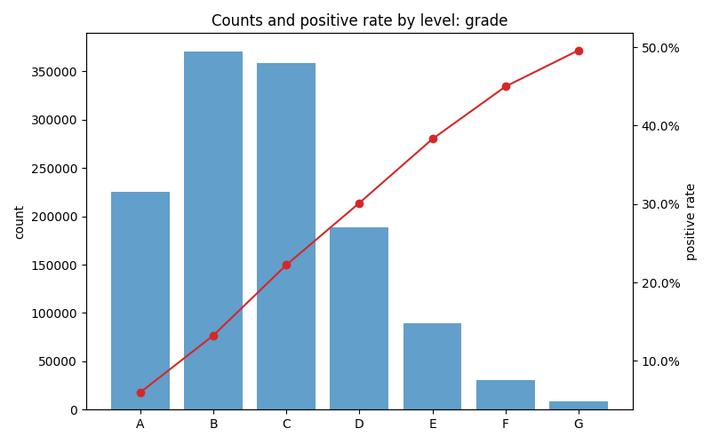
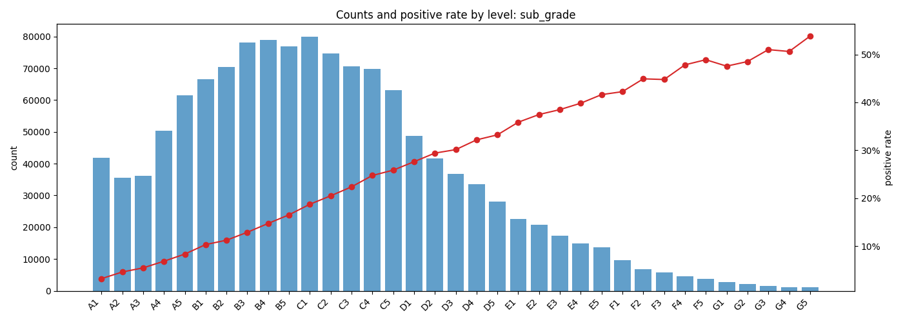
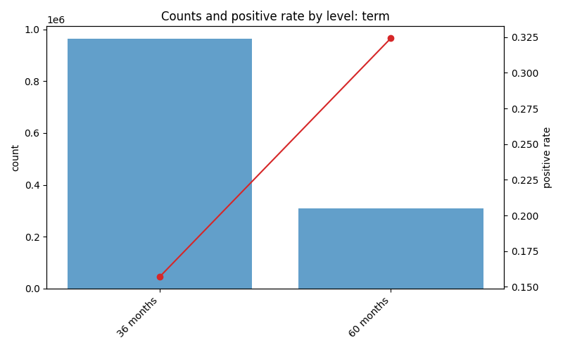
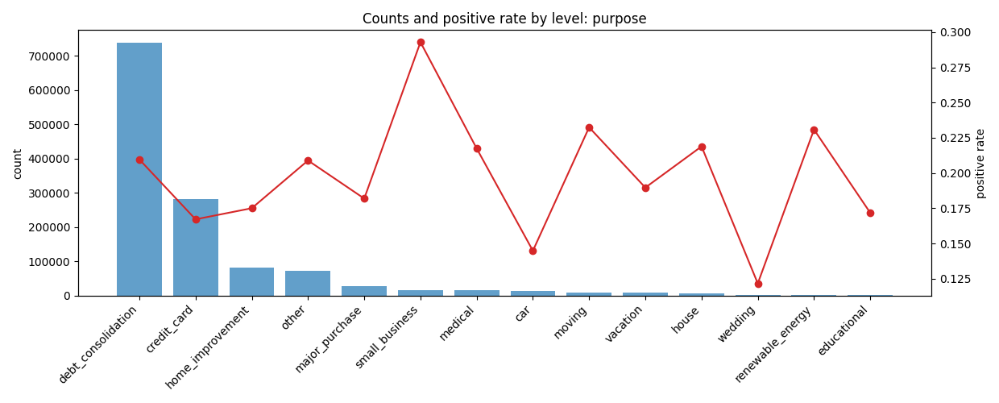
Leakage demonstration and signal strength (why shown). We include two correlation panels and two PSI panels to (i) contrast origination‑only vs leaky features and (ii) quantify temporal drift.
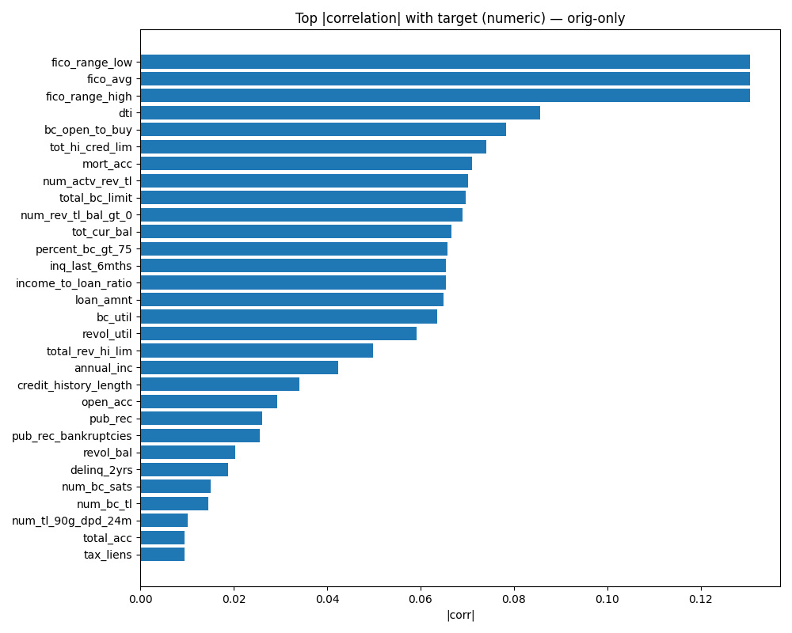
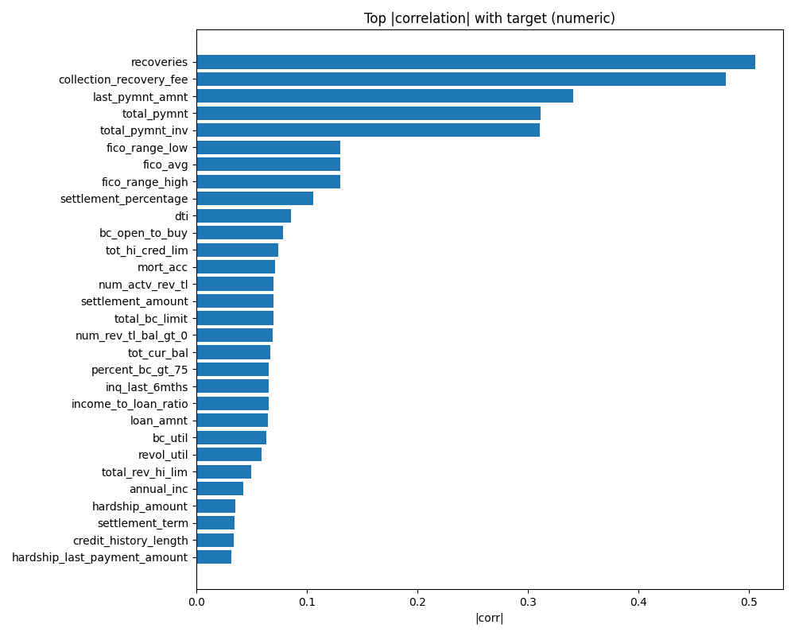
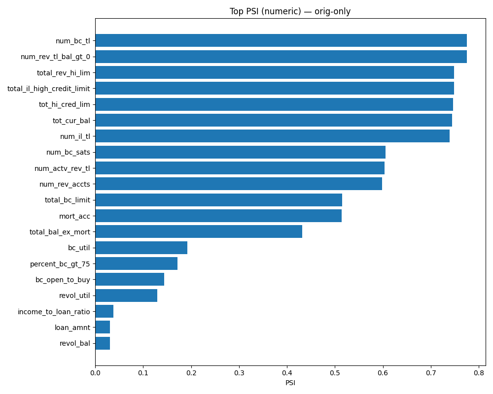
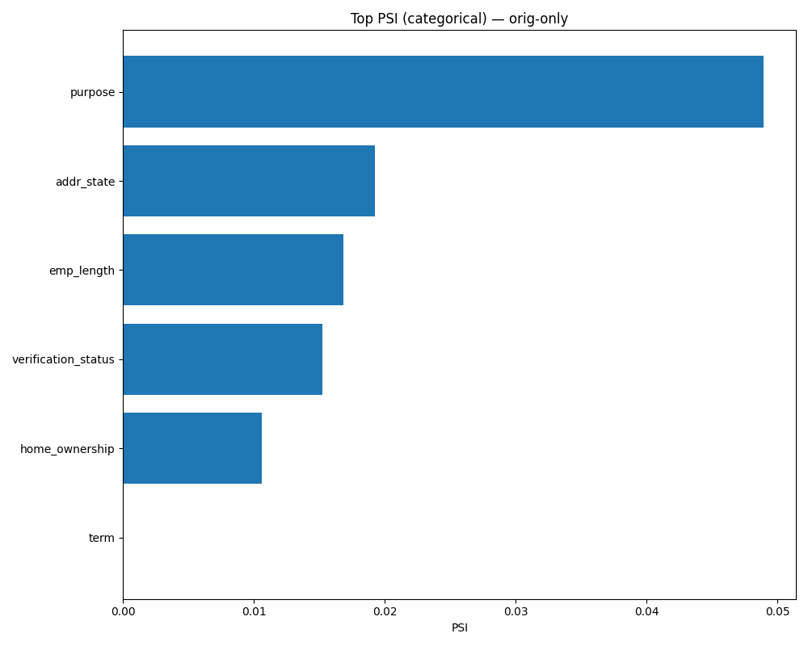
How EDA informs modeling. The figures here–here collectively justify: (i) time‑based
splits and fixed thresholds, (ii) leakage exclusion policies, (iii)
winsorization and monotone priors for NNs on int_rate and
dti, (iv) embeddings for ordinal categoricals
(grade/sub_grade), and (v) drift monitoring (PSI) with recalibration or
retraining.
We evaluate four representative feature regimes and three dataset scales:
Feature regimes. 1) Compact baseline (about 12 features): core
demographic, capacity, and FICO-range signals. 2) Compact +
pricing/grade (about 16 features): adds int_rate,
grade, sub_grade, and
installment. 3) Broad without pricing (about 39 features):
adds depth/limits/utilization but excludes pricing/grade. 4) Broad +
pricing/grade (about 43 features): combines broad signals and
pricing/grade.
Dataset scales. 1) 10k: medium-sample; sufficient to benefit from richer features. 2) 100k: large-sample; strong signal and robust comparisons. 3) full: full cohort; most realistic “production-like” benchmark.
Rationale. We exclude the 1k subset due to small-sample overfitting and high variance that lead to unstable thresholds and misleading PR/ROC comparisons. The 10k/100k/full scales provide enough support for provider-aware features and yield robust, reproducible estimates that generalize out-of-time.
We compare common tabular modeling families and analyze their suitability to the LendingClub task.
Generalized Linear Models (GLM). Logistic regression provides a transparent baseline with calibrated probabilities under certain assumptions. It captures additive effects but struggles with high-order interactions unless engineered.
Random Forests (DRF). Ensembles of de-correlated trees reduce variance and capture non-linearities. They can handle heterogeneous scales and some categorical encodings but may be outperformed by boosted trees on tabular tasks.
Gradient-Boosted Trees (GBM) and XGBoost. Additive trees trained stage-wise excel on structured, tabular problems, capturing interactions with strong regularization and built-in handling of missingness. These models are typically top-performing for tabular credit risk.
Deep Neural Networks (MLP). Fully-connected networks approximate complex functions given sufficient data and regularization. They require careful design for tabular data: robust preprocessing, categorical encodings (embeddings or one-hot), batch normalization, dropout, early stopping, and calibrated outputs. They can model interactions naturally but can lag boosting unless architecture and training are tuned to tabular idiosyncrasies. Recent studies demonstrate hybrid or carefully-regularized NNs achieving competitive performance on credit-like tasks (H. Li et al., 2022; Wang & Wang, 2024).
Why NNs matter here. NNs offer a single, end-to-end model that can incorporate learned embeddings for categorical grades (Guo & Berkhahn, 2016), side-channel text (e.g., loan descriptions), and additional modalities in future iterations. With calibration and monotonic priors (Chen & Guestrin, 2016; Guo et al., 2017; Ke et al., 2017; Platt, 1999; Zadrozny & Elkan, 2001), they can become competitive and more portable across providers.
Objective. Reduce variance and drift sensitivity while preserving predictive power, under the same time‑based protocol as training.
Method (baseline). We use filter methods—mutual information (MI) and
L1‑regularized logistic regression—as first‑pass selectors: - Evaluation
protocol: time‑based split on issue_d; validation carved
from the training period only; no lookahead to test; invariants match
training (imputation, winsorization, encoding). - Ranking: MI for
non‑linear dependency; L1 for sparse linear signal. We aggregate or
compare to stabilize against idiosyncratic ties. - Stopping rules: cap
by target feature count (e.g., 12/16/39/43 regimes) and/or MI elbow;
confirm AUC/PR vs full set on validation. - Outputs: selected feature
list, full ranking, and AUC/PR curves; these drive the compact regimes
used in the experiments.
Engineering toggles. Engineered features (e.g.,
fico_avg, fico_spread,
income_to_loan_ratio) can be included/excluded explicitly
to quantify their lift. Selection runs mirror training preprocessing so
that downstream metrics remain comparable.
Provider‑agnostic (portable) regime. Excludes provider
pricing/scoring features (e.g., int_rate,
grade, sub_grade, installment).
Rationale: portability across lenders/policies and reduced drift risk.
EDA shows these fields are predictive but can encode policy and macro
effects; omitting them improves generalization when policy changes.
Provider‑aware (in‑provider accuracy) regime. Includes pricing/grade; improves AUCPR/ROC at 10k/100k/full by leveraging monotone and ordinal signals. Rationale: if deployment is tied to the same provider, these features capture underwriting decisions that correlate with risk. We monitor drift (PSI) and use calibration/threshold selection to maintain decision quality.
Trade‑offs. Accuracy vs portability; monotonicity vs policy sensitivity; fairness considerations (avoid granular geography like ZIP). Our results show where each regime wins, and the NN roadmap targets closing the gap in the agnostic setting via representations and monotone priors.
Logistic Regression (GLM). A generalized linear model mapping a linear combination of inputs through a logistic link to produce probabilities. Pros: simplicity, interpretability, and fast training. Cons: limited to additive effects unless interactions are manually engineered; can underfit complex tabular structure.
Decision Trees. Recursive partitioning of feature space into regions with homogeneous labels. Pros: intuitive splits and basic nonlinearity. Cons: high variance; shallow trees underfit; deep trees overfit; sensitive to small data perturbations.
Random Forests (Bagging). An ensemble of trees trained on bootstrap samples with feature subsampling at splits. Pros: variance reduction; robust to noise; handles mixed feature types. Cons: weaker at capturing subtle additive improvements than boosting; may lag in AUCPR versus tuned boosting.
Gradient-Boosted Trees (GBM/XGBoost). Iteratively add trees to correct residuals from prior trees. Pros: strong performance on structured tabular data; captures interactions; built-in regularization (shrinkage, subsampling, depth constraints). Cons: tuning required (learning rate, depth, min child weight, subsampling); feature monotonicity not guaranteed unless explicitly constrained.
Neural Networks (MLP for Tabular). A stack of linear layers with nonlinear activations (e.g., ReLU/GELU), optionally batch normalization and dropout, trained with stochastic gradient descent variants (Adam, AdamW). Pros: flexible function approximators; easy to incorporate learned embeddings and auxiliary modalities. Cons: sensitive to preprocessing, initialization, and regularization; may be outperformed by boosting without careful design; probability calibration often requires post-hoc methods.
Losses and Imbalance. Binary cross-entropy (BCE) is standard for probabilistic classification; focal loss reweights hard examples to improve minority-class recall at the cost of calibration. Class weights or balanced batches mitigate skew. Evaluation should prioritize PR curves (precision/recall) and AUCPR rather than accuracy.
Calibration. For threshold-dependent decisions (e.g., approve/decline), well-calibrated probabilities matter. Platt scaling (logistic regression on logits), isotonic regression (non-parametric), or temperature scaling (for NNs) align predicted probabilities to empirical frequencies on validation.
Data handling and leakage control. We exclude post-origination features (payments, recoveries, last_* dates, hardship/settlement) from all runs. This aligns with best practices and prior empirical audits on LendingClub.
Preprocessing. Numerical features use median imputation and
standardization; categorical features use frequent-category imputation
with one-hot encoding. Winsorization limits outliers for sensitive
ratios (dti, revol_util,
income_to_loan_ratio, etc.). Engineered features include
fico_avg, fico_spread, and
income_to_loan_ratio when enabled.
Evaluation. We adhere to chronological train/test splits; select thresholds on validation (Youden J) within the training period; and report test metrics at the fixed threshold. We compute AUCPR and ROC AUC, plus confusion, precision, recall, and FPR at the operating point. Prior credit risk work emphasizes time-aware modeling and censoring considerations that motivate temporal evaluation in our setting (Banasik et al., 1999; Bellotti & Crook, 2013).
Automated modeling backend. H2O AutoML orchestrates GBM, XGBoost, DRF, GLM, and Deep Learning (MLP) models, producing leaderboards and explainability artifacts (variable importance, partial dependence, SHAP-like insights). We use these for transparent comparisons and to guide NN engineering in future iterations. Neural-network-centric PyTorch runs are planned and discussed in Section 15 (Future Work).
Reproducibility (high level, within this thesis). All comparisons share: the same dataset cohorts, origination-only features, chronological splits, validation-carved threshold selection, and consistent preprocessing. Each figure and table in this thesis references artifacts produced under these constraints, ensuring repeatability.
We leverage H2O as an industrial-strength modeling platform to establish strong baselines, standardized comparisons, and rich explainability. This section summarizes the parts most relevant to our thesis and how they blend into the methodology.
Why H2O here. Using a single platform to produce multi-family baselines, curated leaderboards, and aligned explainability reduces variance in our comparisons and keeps the focus on scientific questions—e.g., when NNs compete, which features help them most, and how stable the conclusions are across time splits. The figures and tables throughout the Results sections are generated from H2O outputs so that every claim is grounded in consistent, reproducible artifacts.
We chose H2O as the comparative backend for four primary reasons that align with the thesis goals:
Apples‑to‑apples multi‑family baselines under one roof. H2O trains GBM, XGBoost, DRF, GLM, and DeepLearning with consistent pre‑processing, scoring, and logging. This eliminates hidden confounders when comparing NNs to ensembles and keeps our focus on the scientific question (feature regimes and NN viability), not on tool mismatches. We sort the leaderboard by AUCPR to match our imbalance‑aware objective.
Rich, standardized explainability. Built‑in per‑family varimp heatmaps, partial dependence/ICE, and model‑correlation/Pareto plots allow us to interpret drivers and diagnose model diversity without bespoke code. This is crucial to a neural‑centric thesis: we can contrast NN attributions against GBM/XGB drivers to understand when and why NNs differ.
Reproducible artifacts and scalable search. Time‑budgeted AutoML scales to larger datasets (100k, full) while keeping seeds and knobs (nthreads, include/exclude lists) reproducible.
Complements a PyTorch NN track. H2O’s DeepLearning provides a strong, well‑regularized MLP baseline for tabular data; ensembles (GBM/XGB) serve as a robust yardstick. This frees the PyTorch track to focus on NN‑specific improvements (embeddings, monotone regularization, calibration, temporal CV) while we retain consistent, state‑of‑the‑art tree baselines for comparison.
Limitations (acknowledged). H2O’s DeepLearning is not a replacement for modern tabular NN research (e.g., transformers with feature tokenization). We therefore treat it as a strong MLP baseline, and we outline a PyTorch plan (Section 15, Future Work) for neural‑first advances. H2O also requires Java; we mitigate this operational constraint with a documented pre‑flight and containerized environments.
What H2O trains (exact regime). In H2O AutoML 3.46.x, the
DeepLearning (feed‑forward NN) component consists of one small default
model and three predefined hyperparameter grids. These are implemented
in the AutoML Java sources (DeepLearningStepsProvider) and surface in
leaderboards with IDs such as DeepLearning_def_1_AutoML_...
and DeepLearning_grid_{1,2,3}_AutoML_... (we observe these
in our run artifacts, e.g.,
docs/experiments/run/h2o_full_dataset/results/h2o_leaderboard.csv).
def_1). Hidden layers:
[10, 10, 10]. Other parameters use H2O defaults (Rectifier
activation; no dropout grid). Purpose: lightweight baseline NN.grid_1, grid_2,
grid_3). Common base settings across all grids:
RectifierWithDropouttrue (AdaDelta‑style) with search over
_rho ∈ {0.9, 0.95, 0.99} and
_epsilon ∈ {1e‑6, 1e‑7, 1e‑8, 1e‑9}_input_dropout_ratio ∈ {0.0, 0.05, 0.10, 0.15, 0.20}_epochs = 10000 (effective training governed by
early stopping on the AutoML‑configured metric)stopping_metric: AUC,
sort_metric: AUCPR, and provide a validation frame carved
from train time).grid_1 (1 layer):
_hidden ∈ { [20], [50], [100] };
_hidden_dropout_ratios ∈ { [0.0], [0.1], [0.2], [0.3], [0.4], [0.5] }grid_2 (2 layers):
_hidden ∈ { [20,20], [50,50], [100,100] };
_hidden_dropout_ratios ∈ { [0.0,0.0], [0.1,0.1], …, [0.5,0.5] }grid_3 (3 layers):
_hidden ∈ { [20,20,20], [50,50,50], [100,100,100] };
_hidden_dropout_ratios ∈ { [0.0,0.0,0.0], [0.1,0.1,0.1], …, [0.5,0.5,0.5] }Provenance (source and version). These grids are defined in H2O
AutoML’s Java code for release 3.46 (the version we pin in
requirements.txt):
h2o-automl/src/main/java/ai/h2o/automl/modeling/DeepLearningStepsProvider.java.
The code sets the base parameters and search spaces quoted above
(activation, adaptive rate with rho/epsilon, input/hidden dropout grids,
and hidden layer sizes). Our leaderboards show entries like
DeepLearning_grid_2_AutoML_..., which correspond exactly to
these steps. See also the H2O AutoML and Deep Learning manuals for
defaults and behavior (H2O.ai, 2018b, 2018a).
Implications for this thesis. H2O’s DL search explores shallow‑to‑moderate MLPs (1–3 layers) with modest widths (20/50/100) and systematic dropout/optimizer hyperparameters. It does not include embeddings, batch normalization, GELU/modern activations, or deeper/wider stacks. Consequently, we treat it as a strong, regularized baseline NN for tabular data and build our PyTorch roadmap (Section 15) to extend beyond this regime (categorical embeddings, monotone regularization, calibration, and deeper architectures when justified by data scale).
| Dataset | Max runtime | Sort metric | Seed | Families (eligible) | Threshold selection |
|---|---|---|---|---|---|
| 10k | ~300 s | AUCPR | 42 | GBM, XGB, DRF, GLM, DeepLearning | Youden J on validation |
| 100k | ~900 s | AUCPR | 42 | GBM, XGB, DRF, GLM, DeepLearning | Youden J on validation |
| full | ~5,400 s | AUCPR | 42 | GBM, XGB, DRF, GLM, DeepLearning | Youden J on validation |
Notes. Budgets scale with dataset size (cf. suite run scripts); leaderboard sorting is AUCPR to reflect class imbalance; the positive class is 0 = Charged Off; thresholds are always chosen on validation and fixed for test.
Table 1 summarizes the winning configuration (by AUCPR) per dataset size, along with ROC AUC. See per-dataset figures in Section 8.
| Dataset | Winner Family | Feature Regime | Avg Precision | ROC AUC |
|---|---|---|---|---|
| 10k | GBM | Broad+Pricing/Grade (43) | 0.4601 | 0.7591 |
| 100k | XGBoost | Broad+Pricing/Grade (43) | 0.4524 | 0.7435 |
| full | GBM | Broad+Pricing/Grade (43) | 0.3934 | 0.7093 |
See this table for a compact overview; detailed curves and model explainability are analyzed next. We emphasize PR (precision–recall) as the primary metric due to class imbalance (Davis & Goadrich, 2006; Saito & Rehmsmeier, 2015): it directly reflects precision at relevant recall levels for default detection. ROC AUC complements PR by showing overall ranking quality irrespective of threshold.
Observations. - 10k/100k/full: The broad + pricing/grade (43
features) wins by a clear AUCPR margin. Pricing (int_rate)
and grade information are consistently top drivers, improving ranking
quality and precision at relevant recall levels.
We now analyze each dataset size (10k, 100k, full), include curves and explainability figures, and interpret takeaways.
8.2 10k subset (medium-sample regime)
Winner and rationale. The winner uses 43 features (broad + pricing/grade). Average Precision is 0.4601; ROC AUC is 0.7591. At this scale, enriched pricing/grade features tend to lift PR in the high-recall region where false positives are costly.
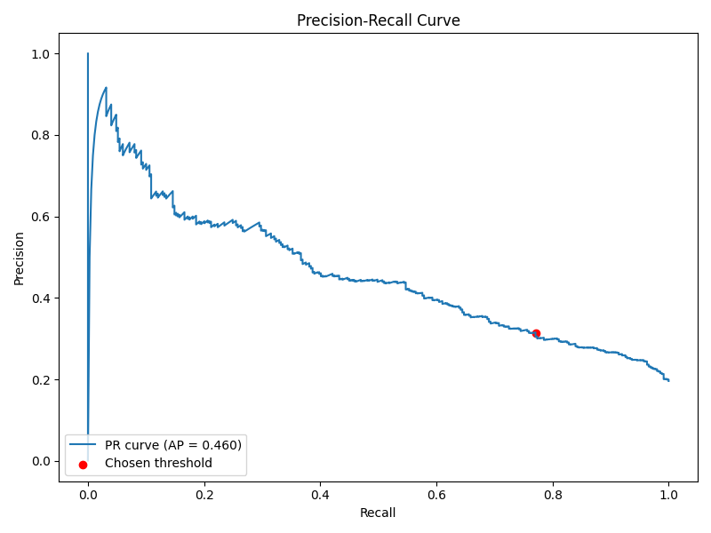
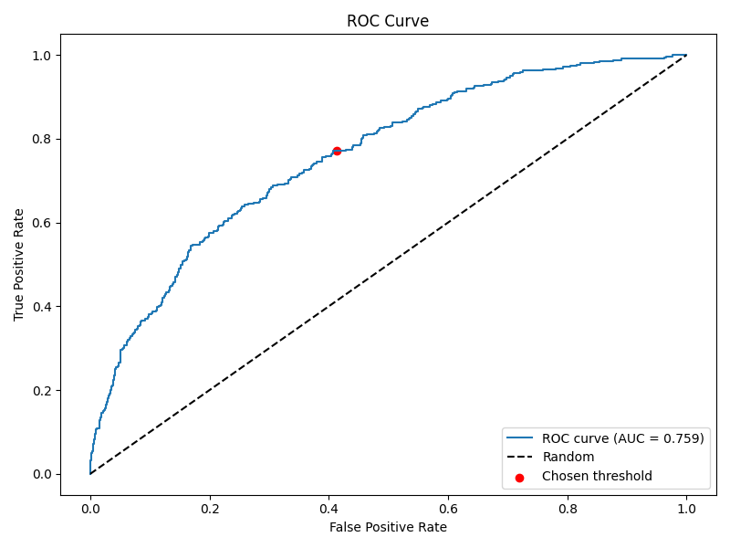
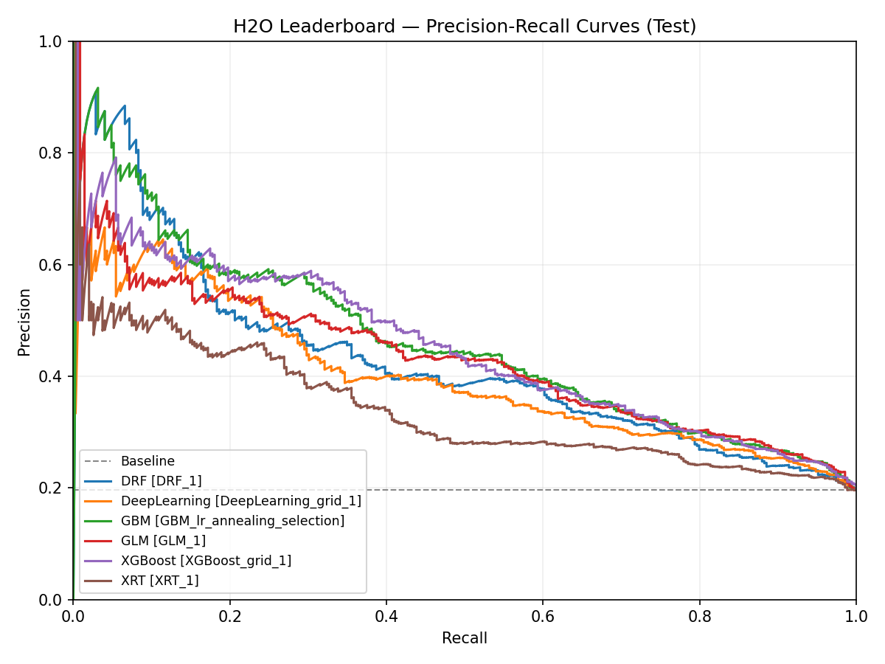
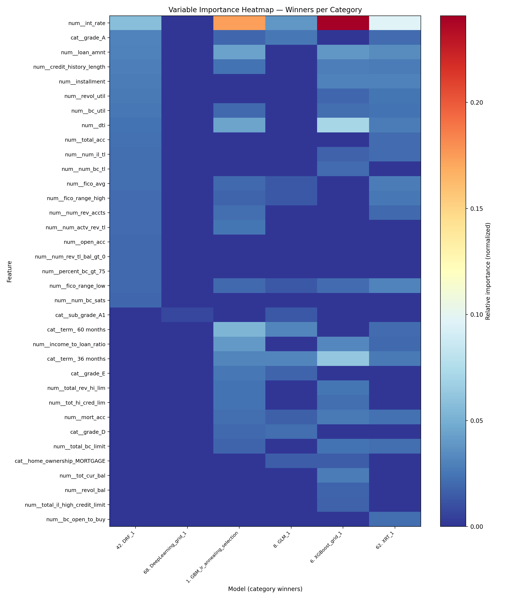
Curves (why shown). At 10k, enrichment improves both threshold-sensitive performance (PR) and threshold-free ranking (ROC), suggesting a genuine gain rather than a threshold artifact.
Model comparison (why shown). Comparing PR across the top models makes the magnitude of improvement tangible; this is preferred over single-number summaries because AUCPR integrates across all operating points.
Explainability (why shown). int_rate, term, and grade
carry much of the discriminative power at 10k—evidence to include these
features at this scale while monitoring drift.
Interpretation and NN contrast. Adding pricing/grade yields a
noticeable AUCPR lift relative to 12- or 39-feature baselines.
int_rate emerges as a dominant driver, with term and grade
bands providing additional stratification. Ensembles lead overall; NNs
benefit from richer signals but remain slightly behind top GBM/XGBoost
here. NN varimp (deeplearning) highlights fico_spread,
term, and select purpose/state dummies—overlapping with GBM drivers but
often spreading attribution across categorical partitions rather than
ranking int_rate as sharply as GBM. This suggests NNs can
leverage generalizable capacity/depth cues but may require explicit
encoding/regularization to fully exploit pricing/grade at this
scale.
8.3 100k subset (large-sample regime)
Winner and rationale. The winner uses 43 features (broad + pricing/grade). Average Precision is 0.4524; ROC AUC is 0.7435. With more data, the model can exploit richer interactions embedded in pricing/grade without overfitting.
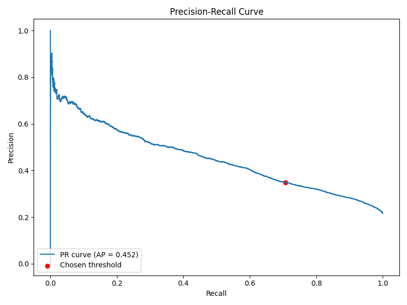
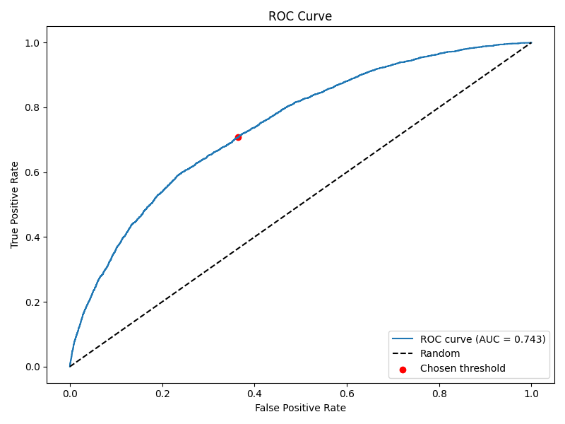
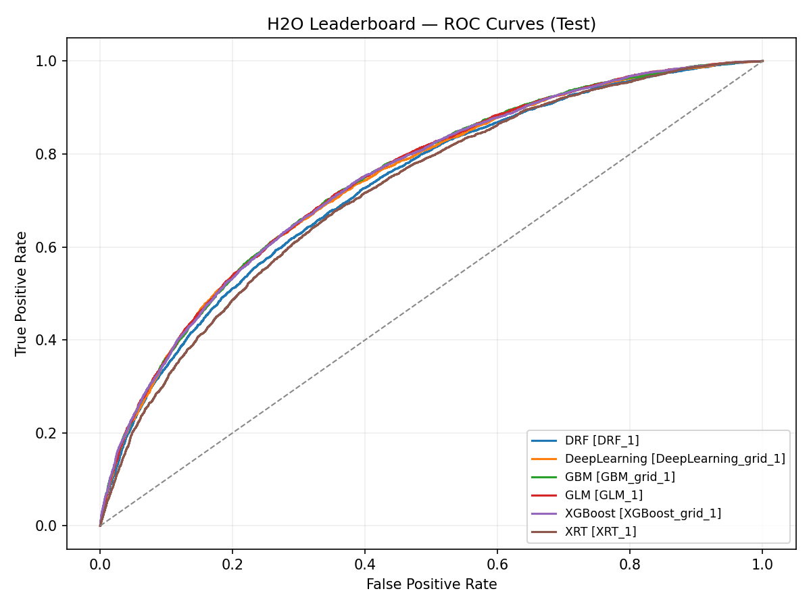
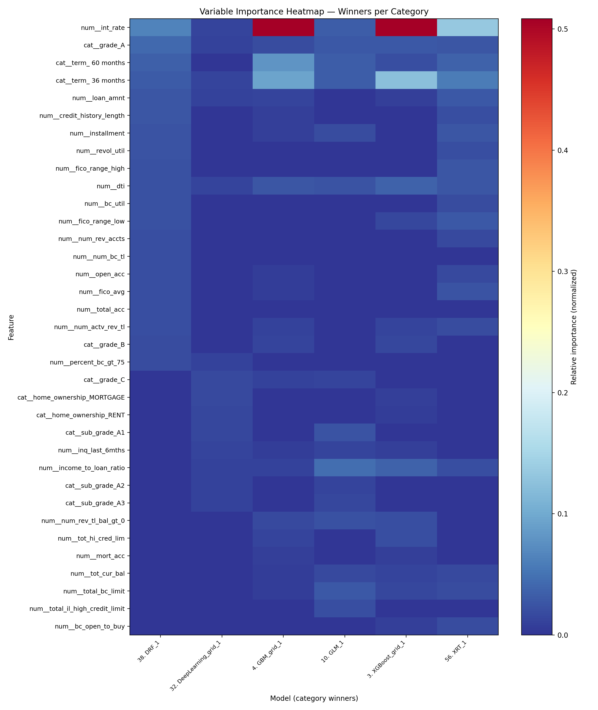
Curves (why shown). At 100k, enrichment sustains PR gains while maintaining high ROC AUC, indicating robustness rather than a narrow operating-point win.
Model comparison (why shown). ROC comparisons highlight where ensembles outperform alternatives, which is appropriate for ranking-focused screening.
Explainability (why shown). Pricing/grade dominate at scale, with
dti and credit depth contributing incremental lift.
Interpretation and NN contrast. With more data, pricing and grading
fully dominate variable importance, with dti, credit depth,
and loan size adding incremental signal. Tree ensembles (GBM/XGBoost)
capitalize on these structured interactions and achieve top performance.
NN varimp at 100k ranks grade/term, int_rate, and
fico_spread among top drivers, but the attribution remains
more distributed across sub-grades and home-ownership states compared to
GBM’s sharper focus on int_rate and term. This is
consistent with NNs learning broader categorical embeddings that capture
latent structure.
8.4 Full dataset (production-like benchmark)
Winner and rationale. The winner uses 43 features (broad + pricing/grade). Average Precision is 0.3934; ROC AUC is 0.7093. Threshold (Youden J, selected on validation): 0.1765. Confusion (test): tp=36,227; tn=129,969; fp=68,284; fn=19,876 (Precision 0.347; Recall 0.646; FPR 0.344). We report PR and ROC because they serve complementary roles: PR guides action under imbalance; ROC validates stable ranking.
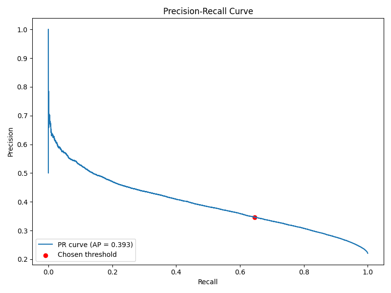
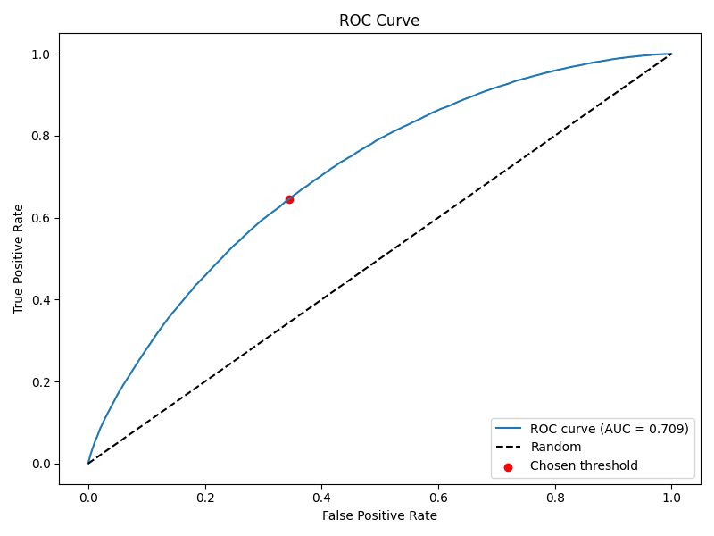
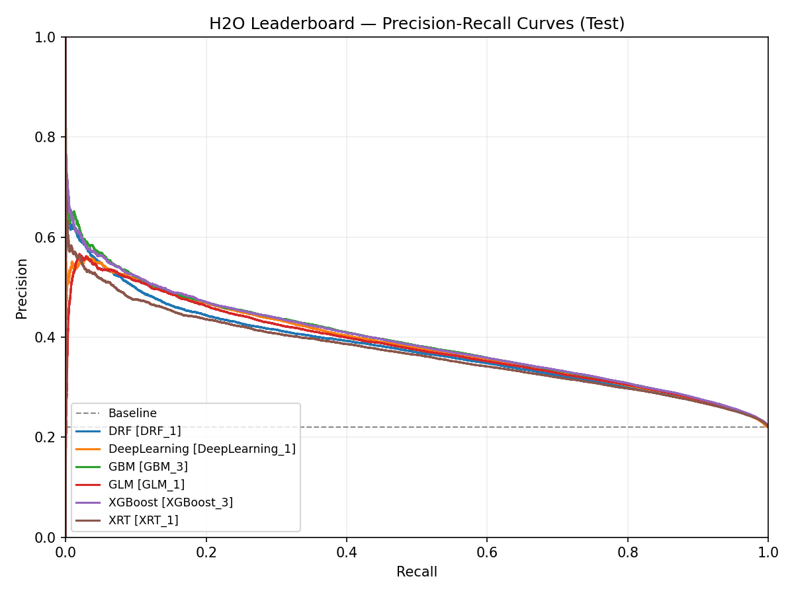
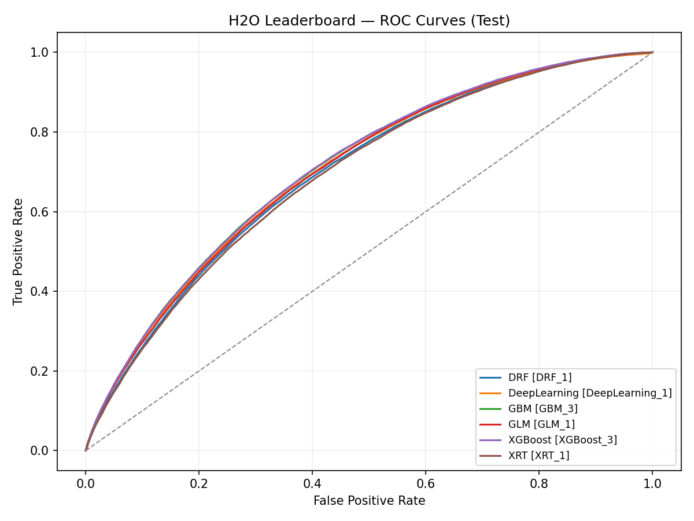
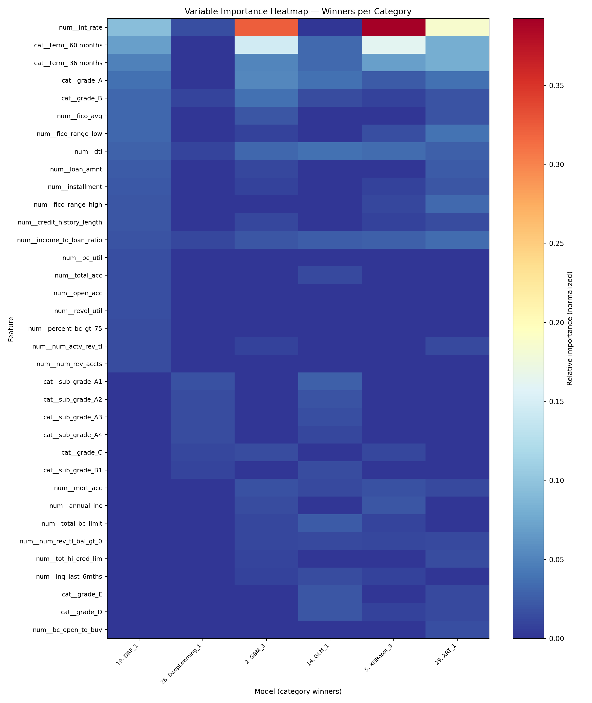
Curves (why shown). On the full dataset, both PR and ROC document performance and anchor the fixed threshold to the PR shape.
Model comparison (why shown). Comparing the strongest contenders in both PR and ROC spaces ensures the chosen winner is not an artifact of a single metric.
Explainability (why shown). Pricing (int_rate), term,
and grade dominate feature importance—evidence for including these
variables in production-scale models.
NN attributions vs GBM (full). For the full dataset, NN varimp
(deeplearning) elevates int_rate and a hierarchy of
sub-grades (A1–A4) alongside addr_state_CA and
purpose_debt_consolidation, while GBM varimp emphasizes
int_rate, term (36/60), grade bands, and DTI. The overlap
on int_rate and grade is substantial, but the NN’s
finer-grained focus on sub-grade categories suggests that learned
embeddings capture within-grade nuances. GBM’s stronger ranking of term
is consistent with tree splits exploiting the 36/60 dichotomy
efficiently. This contrast supports using embeddings and monotonic cues
in NNs so they can match the crispness of tree splits on known monotone
drivers.
Diversity and trade-offs (why shown). We assess model diversity and the AUCPR–ROC trade-off frontier to reason about stacking/ensembling potential and to select models that are Pareto-efficient rather than single-metric winners.
Family summaries (why shown). We summarize performance by family and highlight the best per family—useful to understand whether NNs lag uniformly or only against certain ensembles.
Interpretation. The enriched regime maintains the best AUCPR; pricing
(int_rate) and term/grade signals dominate. This aligns
with lender risk and pricing policy at origination: cost of credit
correlates with default risk. Importantly, installment adds
little beyond loan_amnt, term, and
int_rate—consistent with deterministic relationships. These
insights will guide architecture and feature choices for NNs.
9.1 Strengths of Gradient Boosting on Tabular Data
Boosted trees thrive on structured, heterogeneous tabular features: they naturally capture non-linearities and interactions without heavy feature engineering, handle missingness, and regularize effectively. Their built-in split search over ordinal encodings of categoricals (e.g., one-hot grade levels) yields powerful, piecewise-constant approximations that often set a strong bar.
9.2 Challenges and Opportunities for NNs on LendingClub
Neural networks must convert heterogeneously-scaled, partially ordinal, and often sparse inputs into representations that make learning efficient and stable. Critical factors:
Categorical encodings. One-hot encoding for high-cardinality
categories (e.g., sub_grade) can inflate dimensionality.
Learned embeddings compress categories into dense vectors that capture
similarity, improving sample efficiency. Embeddings for
grade/sub_grade, addr_state, and
purpose are natural targets.
Monotonic and domain priors. Many tabular relationships are monotonic
(e.g., higher int_rate implies higher default risk, all
else equal). Injecting monotonic constraints or regularizing partial
derivatives along key features stabilizes learning, reduces overfitting,
and improves interpretability.
Regularization and optimization. BatchNormalization, dropout schedules, weight decay, and careful learning-rate schedules (with early stopping on validation) are essential. Mixup/cutmix for tabular data and sharpness-aware minimization (SAM) are promising.
Class imbalance. Positive class is Charged Off; imbalance requires calibrated loss functions or sampling strategies. Focal loss, class weighting, and balanced batches should be evaluated. Oversampling must remain within the training subset only.
Calibration and thresholds. NNs require post-hoc calibration (Platt, Isotonic, temperature scaling) to align probabilities for thresholding. This is crucial for business decisions derived from precision–recall operating points.
Temporal robustness. Forward-chaining (expanding-window) CV quantifies variance across vintages; NNs benefit significantly from validation regimes that reflect deployment and from drift-aware retraining policies.
Observation. In several families, 10k outperforms 100k, and both can outperform the full dataset on AUCPR. This is counterintuitive given that more data typically helps.
Hypothesis. Temporal distribution shift dominates the signal as we add older vintages: borrower mix, underwriting policy (pricing/grade), and macro conditions change. The larger datasets include earlier periods whose relationships differ from the later test window, degrading out-of-time precision at the fixed validation-chosen threshold. Smaller samples (10k) drawn closer in time to the test window capture more current relationships and prevalence, yielding better AUCPR despite less data.
Contributing factors. - Concept drift: changes in
int_rate, grade policy, or eligibility criteria alter
target relationships across vintages. - Prevalence shift: default base
rate varies over time; fixed-threshold decisions can be misaligned when
prevalence differs. - Covariate shift: distributions of capacity/depth
features (e.g., DTI, limits) shift, harming ranking near the operating
region. - Label maturity/right-censoring: earlier cohorts have fully
matured labels; later cohorts can be partially censored; mixing the two
affects learned patterns.
Mitigations (actionable). - Temporal CV with expanding windows:
report means/variances across folds; select hyperparameters that are
stable across time. - Recency weighting: up-weight recent vintages in
the loss, or restrict the training window to recent periods when
deployment requires it. - Drift-aware calibration and thresholds:
calibrate on the validation slice adjacent to the test window; freeze
and periodically re‑calibrate. - Prior/target shift correction: adjust
decision thresholds for changing base rates; consider expected-utility
thresholds instead of Youden J. - Feature stability selection: prefer
features stable across folds (PSI/selection frequency) to reduce drift
sensitivity. - Add time-aware signals: include coarse time indicators
(e.g., vintage bins) or hierarchical time encodings for NNs; constrain
monotone features explicitly (e.g., int_rate).
Takeaway. Better AUCPR at 10k vs 100k/full is a strong indicator that drift dominates sample-size gains. Combining temporal CV, recency weighting, and drift-aware calibration can recover the benefits of more data without sacrificing out-of-time precision.
Correlation and MI at origination. Correlations show FICO averages as
strong anti-correlates (~-0.13), with DTI and utilization positively
associated. Mutual information highlights fico_spread,
term, fico_avg,
income_to_loan_ratio, loan_amnt, and
inquiry/depth features as high-signal drivers.
Leakage demonstration. Including post-event features (e.g.,
total_pymnt, recoveries,
last_pymnt_d) yields spurious correlations and MI—hence the
strict exclusion policy.
Temporal drift (PSI). Credit-depth features shift over time;
purpose shows modest drift. Pricing variables require
monitoring and possible recalibration.
Implications. Adopt time-based validation and periodic retraining; monitor PSI and recalibrate thresholds as distributions shift.
Right-censoring. Recent vintages may be partially observed; chronological splits mitigate but do not eliminate censoring artifacts. Survival/competing-risks modeling is future work.
External generalization. Provider-aware features (pricing/grade) boost accuracy but can reduce portability across lenders or policy regimes. Provider-agnostic models trade a small amount of accuracy for robustness out of domain.
Data quality and measurement error. Stated income and several categoricals contain noise; robust preprocessing and winsorization reduce—but do not remove—bias and variance.
Hyperparameter/budget sensitivity. Larger models and tabular transformers may yield further gains, but results here reflect bounded search budgets designed for reproducibility.
Omitted modalities. Rejects data and free-text fields were not modeled in this iteration; both can affect selection bias and incremental lift estimates.
This iteration benchmarked default prediction on LendingClub across dataset scales (10k, 100k, full), feature regimes (compact vs broad, with/without pricing and grade), and model families (neural networks vs strong tree ensembles) under time-aware evaluation with validation-chosen thresholds.
What we compared. - Dataset scale: 10k vs 100k vs full cohorts. -
Feature subsets: compact core signals; broad depth/limits; and
provider-aware variants that add int_rate,
grade/sub_grade, and installment. - Models:
calibrated neural networks (MLPs) versus strong tree ensembles (AutoML
baselines) on identical splits and thresholding protocol.
What we learned. - Feature importance of pricing/grade. Adding
int_rate, grade/sub_grade, and
installment consistently improves discrimination,
especially at 100k and full (Emekter et al.,
2015b; Jagtiani & Lemieux, 2019b; Serrano-Cinca
et al., 2015b). Ordinal structure in grade/sub_grade provides
clean signal that NNs can exploit via embeddings (Guo & Berkhahn, 2016). - Stable
origination-time drivers. FICO averages anti-correlate with default;
DTI/utilization correlate positively. These monotone relationships
validate winsorization and monotone cues for NNs (Chen & Guestrin,
2016; Ke et al.,
2017). - Temporal drift matters. PSI indicates moderate drift
in depth/limit features and modest drift in purpose;
pricing variables should be monitored (Siddiqi, 2006). Time-based splits with
thresholds fixed on validation are necessary to avoid optimistic leakage
(Bergmeir et al.,
2018). - Model family patterns. Tree ensembles lead on medium
and large tabular datasets (Grinsztajn et al.,
2022; Shwartz-Ziv & Armon, 2022). NNs are
competitive on smaller samples and can close the gap with categorical
embeddings, strong regularization, monotone guidance on key drivers, and
post-hoc calibration (Guo et al.,
2017; Guo &
Berkhahn, 2016; Platt, 1999; Zadrozny &
Elkan, 2001). - Thresholding and calibration. Choosing a
single operating point on validation and applying it to test yields
reproducible, deployment-aligned metrics; calibration improves
reliability and threshold stability.
Practical implications. - For production-like cohorts, start with
broad + pricing/grade features and a strong boosted-tree baseline;
monitor PSI and recalibrate thresholds over time. - To pursue
neural-first models, combine embeddings for high-signal categoricals,
monotone priors for int_rate/DTI, robust regularization,
temporal CV, and calibration. This blueprint narrows the gap and
prepares for multimodal extensions (e.g., text).
Bottom line. The key levers for out-of-time precision are (i) disciplined time-aware evaluation and fixed thresholds (Bergmeir et al., 2018; Youden, 1950), (ii) inclusion of pricing/grade features when portability permits (Emekter et al., 2015b; Jagtiani & Lemieux, 2019b; Serrano-Cinca et al., 2015b), and (iii) model choices that respect tabular structure and drift (Grinsztajn et al., 2022; Shwartz-Ziv & Armon, 2022; Siddiqi, 2006). With these, we obtain robust, interpretable gains and a clear roadmap to strengthen neural models further.
Enriching with pricing/grade features materially improves discrimination at moderate-to-large scales. Tree ensembles constitute strong baselines on structured, tabular data and lead on 10k/100k/full. Neural networks compete on small samples and, with the proposed roadmap—embeddings for categorical features, monotonic priors, well-regularized training, calibration, and temporal CV—can close the gap and potentially surpass boosting, especially when integrating text and additional modalities.
15.1 Neural roadmap (moved from Section 9)
Architecture. Start with MLPs that combine residual blocks, GELU/SiLU activations, BatchNorm, and dropout. Introduce categorical embeddings for grade/term/purpose/state and optionally learned numeric feature scalers. Explore shallow attention layers over feature tokens (tabular transformers) once strong MLP baselines are in place.
Training protocol. Use temporal CV; monitor AUCPR/ROC and thresholded metrics on validation; adopt cosine decay or OneCycle LR schedules with warmup; add early stopping with patience tuned via CV.
Calibration and thresholds. Evaluate Platt/Isotonic on the validation slice; choose thresholds via Youden J or utility-optimized criteria; always fix the threshold before scoring the test set.
Interpretability. Log permutation/SHAP varimp for the NN; compare to
tree varimp to validate learned representations. Partial dependence
(ICE) on top drivers (int_rate, dti,
term, grade) should demonstrate monotonic trends.
15.2 Practical blueprint for NN experiments (moved from Section 9)
grade/sub_grade (dim 4–8), term (dim 2),
purpose (dim 8), addr_state (dim 8) (Guo & Berkhahn,
2016). Concatenate embeddings with normalized numeric
features.14.3 Feature engineering catalogue (moved from Extended Analysis)
Used now: income_to_loan_ratio (annual_inc / loan_amnt);
fico_avg (mean of low/high); winsorized dti,
revol_util, and ratio features.
Proposed next:
credit_history_length = issue_d - earliest_cr_line (in
months); debt service ratio variants normalized by income; interaction
indicators (e.g., term_60 * high_dti); monotone transforms
on skewed counts (log1p) to stabilize NN training.
14.4 Threshold selection in practice (moved from Extended Analysis)
Use a single operating point via Youden J on validation for consistency. In asymmetric cost settings, optimize expected utility on validation; always freeze the threshold before test scoring.
14.5 Calibration & reliability instrumentation (moved)
Persist per‑row validation/test predicted probabilities; fit post‑hoc calibrators on validation (Platt/Isotonic for GBM, temperature scaling for NNs) (Guo et al., 2017; Platt, 1999; Zadrozny & Elkan, 2001); plot reliability curves and ECE on test; re‑evaluate the fixed threshold selection under calibrated probabilities.
Short term (4–6 weeks). 1) Implement a PyTorch MLP with categorical
embeddings for grade/sub_grade, term,
purpose, and addr_state, plus residual blocks
and calibrated outputs. Compare against H2O DeepLearning on identical
splits. 2) Add temporal CV (expanding window) with aggregate reports and
train_full_after refits; adopt early stopping and LR
schedules tuned via CV. 3) Evaluate focal vs BCE losses and post-hoc
calibration (Platt, Isotonic, temperature scaling) for threshold
stability.
Medium term (6–12 weeks). 1) Explore tabular transformers (feature
tokenization) and monotonic-regularized layers for key drivers
(int_rate, dti). 2) Integrate text fields
(loan descriptions) via lightweight encoders; assess incremental lift
and calibration. 3) Neural feature selection (stochastic gates,
hard-concrete) to learn compact, stable subsets.
Long term. 1) Utility-optimized thresholds aligned with policy constraints; profit-aware metrics in parallel with AUCPR. 2) Robustness under drift: PSI-triggered recalibration/retraining; uncertainty estimates for policy safeguards.
These tables provide exact relative-importance percentages for the top features of the GBM models within each dataset (complementing the variable-importance figures shown in Sections 9.2–9.4). Percentages are normalized within each winner model.
| Feature | Relative Importance (%) |
|---|---|
| num__int_rate | 25.09 |
| cat_term 60 months | 7.64 |
| num__dti | 6.48 |
| num__loan_amnt | 6.35 |
| num__income_to_loan_ratio | 5.77 |
| cat_term 36 months | 4.58 |
| cat__grade_E | 3.76 |
| num__num_actv_rev_tl | 3.62 |
| num__credit_history_length | 3.51 |
| num__total_rev_hi_lim | 3.49 |
| Feature | Relative Importance (%) |
|---|---|
| num__int_rate | 57.51 |
| cat_term 36 months | 10.71 |
| cat_term 60 months | 9.18 |
| num__dti | 2.95 |
| cat__grade_A | 2.24 |
| num__num_rev_tl_bal_gt_0 | 1.84 |
| num__tot_hi_cred_lim | 1.53 |
| cat__grade_B | 1.51 |
| num__loan_amnt | 1.47 |
| cat__grade_C | 1.34 |
| Feature | Relative Importance (%) |
|---|---|
| num__int_rate | 39.28 |
| cat_term 60 months | 17.89 |
| cat__grade_A | 6.39 |
| cat_term 36 months | 6.20 |
| cat__grade_B | 4.58 |
| num__dti | 3.91 |
| num__income_to_loan_ratio | 2.49 |
| num__fico_avg | 2.48 |
| num__mort_acc | 2.11 |
| num__annual_inc | 1.78 |
| Feature | Datasets (out of 4) |
|---|---|
| cat_term 36 months | 4 |
| num__dti | 4 |
| cat_term 60 months | 4 |
| num__income_to_loan_ratio | 3 |
| num__int_rate | 3 |
| num__tot_hi_cred_lim | 2 |
| num__annual_inc | 2 |
| num__loan_amnt | 2 |
| cat__grade_B | 2 |
| cat__grade_A | 2 |
These tables list all runs per dataset with exact metrics corresponding to the AUCPR/ROC plots shown above. “Features” is the count of input columns in the respective run; thresholds are the fixed values chosen on validation (Youden J) and applied to test.
| Run | Features | ROC AUC | Avg Precision | Threshold |
|---|---|---|---|---|
| run_20250925_023120 | 43 | 0.7591 | 0.4601 | 0.1487 |
| run_20250925_023823 | 16 | 0.7523 | 0.4264 | 0.2034 |
| run_20250925_021716 | 39 | 0.7467 | 0.4512 | 0.1315 |
| run_20250925_022418 | 12 | 0.7360 | 0.4206 | 0.3879 |
| Run | Features | ROC AUC | Avg Precision | Threshold |
|---|---|---|---|---|
| run_20250925_032002 | 43 | 0.7435 | 0.4524 | 0.1783 |
| run_20250925_033737 | 16 | 0.7392 | 0.4452 | 0.1922 |
| run_20250925_030244 | 12 | 0.7252 | 0.4269 | 0.1652 |
| run_20250925_024526 | 39 | 0.7304 | 0.4419 | 0.1709 |
| Run | Features | ROC AUC | Avg Precision | Threshold |
|---|---|---|---|---|
| run_20250925_070714 | 43 | 0.7093 | 0.3934 | 0.1765 |
| run_20250925_035452 | 39 | 0.7002 | 0.3839 | 0.1649 |
| run_20250925_053155 | 12 | 0.6815 | 0.3656 | 0.1725 |
| run_20250925_084408 | 16 | 0.6999 | 0.3825 | 0.1644 |
These tables show top features for H2O DeepLearning (NN) per dataset, normalized to percentages. They complement GBM tables in Appendix A and are referenced in Sections 9.2–9.4.
| Feature | Relative Importance (%) |
|---|---|
| num__fico_spread | 5.90 |
| cat__sub_grade_G1 | 5.80 |
| cat__sub_grade_G5 | 5.58 |
| cat__sub_grade_G4 | 5.43 |
| cat__purpose_renewable_energy | 5.29 |
| cat__addr_state_WY | 5.22 |
| cat__sub_grade_G3 | 5.09 |
| cat__addr_state_ND | 5.02 |
| cat__addr_state_VT | 5.00 |
| cat__addr_state_MT | 4.90 |
| Feature | Relative Importance (%) |
|---|---|
| cat__grade_C | 6.75 |
| cat__home_ownership_MORTGAGE | 6.49 |
| cat__home_ownership_RENT | 6.29 |
| cat__sub_grade_A1 | 5.96 |
| num__fico_spread | 5.83 |
| cat__emp_length_10+ years | 5.71 |
| cat__purpose_credit_card | 5.33 |
| num__inq_last_6mths | 5.08 |
| cat__purpose_debt_consolidation | 4.92 |
| num__int_rate | 4.92 |
| Feature | Relative Importance (%) |
|---|---|
| cat__sub_grade_A1 | 7.69 |
| num__int_rate | 6.65 |
| cat__sub_grade_A2 | 6.28 |
| cat__sub_grade_A3 | 6.01 |
| cat__sub_grade_A4 | 5.95 |
| cat__addr_state_CA | 5.70 |
| cat__purpose_debt_consolidation | 5.28 |
| cat__sub_grade_A5 | 5.01 |
| cat__sub_grade_E4 | 4.90 |
| cat__grade_C | 4.54 |
| Column | Category |
|---|---|
| out_prncp | post‑event balance |
| out_prncp_inv | post‑event balance |
| total_pymnt | payments (leaky) |
| total_pymnt_inv | payments (leaky) |
| last_pymnt_d | last payment date (leaky) |
| last_pymnt_amnt | last payment amount (leaky) |
| next_pymnt_d | next payment date (leaky) |
| last_credit_pull_d | post‑event bureau pull |
| collection_recovery_fee | collections/recovery |
| recoveries | collections/recovery |
| hardship_flag / type / reason / status | hardship (post‑event) |
| hardship_amount / dates / length / dpd | hardship details |
| hardship_loan_status | hardship outcome |
| orig_projected_additional_accrued_interest | post‑event accrual |
| hardship_payoff_balance_amount | hardship payoff |
| hardship_last_payment_amount | hardship payment |
| debt_settlement_flag / date | settlement |
| settlement_status / date / amount / percentage / term | settlement details |
| Column | Policy | Rationale |
|---|---|---|
| zip_code | exclude | fairness (granular geography), portability |
| emp_title (free text) | exclude | high cardinality/noise; use emp_length instead |
| addr_state | include | coarse geography acceptable; monitor drift |
| purpose | include | underwriting context; monitor drift |
| grade / sub_grade | aware only | policy/pricing signals; strong monotone/ordinal drivers |
| int_rate | aware only | pricing for risk; drift‑sensitive; monotone driver |
| installment | aware only | mostly deterministic from loan_amnt/term/int_rate |
| Column | Category |
|---|---|
| loan_amnt | loan design |
| term (36/60) | loan design (monotone risk) |
| annual_inc | capacity |
| dti | capacity (monotone risk) |
| fico_range_low/high; fico_avg | credit score |
| revol_bal; revol_util | utilization |
| open_acc; total_acc | credit depth |
| mort_acc; total_rev_hi_lim | capacity/depth |
| emp_length | stability proxy |
| home_ownership; verification_status; addr_state; purpose | context |
Notes. When ambiguous, we prefer omission to avoid leakage and fairness concerns. In provider‑aware regimes, include pricing/grade with monotone priors and calibration to manage drift; in portable regimes, exclude them to improve generalization across lenders.
| Component | Setting |
|---|---|
| Model | DeepLearning default (def_1) |
| Hidden layers | [10, 10, 10] |
| Activation | Rectifier |
| Early stopping | Enabled via AutoML settings |
| Grid | Hidden choices | Hidden dropout ratios | Activation | Input dropout ratio | Adaptive rate (rho) | Epsilon | Epochs |
|---|---|---|---|---|---|---|---|
| grid_1 | [20], [50], [100] | [0.0] … [0.5] (single) | RectifierWithDropout | {0.0, 0.05, 0.10, 0.15, 0.20} | {0.9, 0.95, 0.99} | {1e−6, 1e−7, 1e−8, 1e−9} | 10000 (early‑stop bound) |
| grid_2 | [20,20], [50,50], [100,100] | [0.0,0.0] … [0.5,0.5] | RectifierWithDropout | {0.0, 0.05, 0.10, 0.15, 0.20} | {0.9, 0.95, 0.99} | {1e−6, 1e−7, 1e−8, 1e−9} | 10000 (early‑stop bound) |
| grid_3 | [20,20,20], [50,50,50], [100,100,100] | [0.0,0.0,0.0] … [0.5,0.5,0.5] | RectifierWithDropout | {0.0, 0.05, 0.10, 0.15, 0.20} | {0.9, 0.95, 0.99} | {1e−6, 1e−7, 1e−8, 1e−9} | 10000 (early‑stop bound) |
Notes. Grids and defaults are defined in H2O AutoML sources
(DeepLearningStepsProvider.java, rel‑3.46; our runs pin
h2o==3.46.0.7). AutoML applies early stopping using the
configured metric (we sort by AUCPR and use AUC for stopping), so
_epochs=10000 acts as an upper bound.